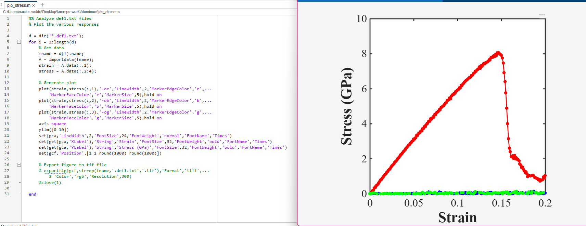
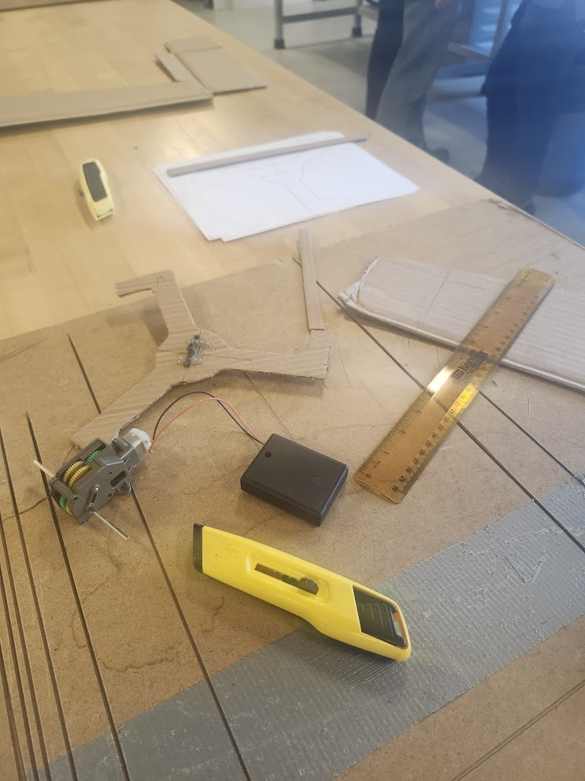

Technical archive of engineering simulations, physical prototypes, and analytical workflows—focused on molecular dynamics, mechanical design, and multi-variable data modeling. Select any project title below to inspect methodology, plots, and test footage.
plo_stress.m) to parse .def1.txt deformation outputs, capturing linear elastic loading up to ~8 GPa near 0.15 strain followed by post-peak yielding and softening.
